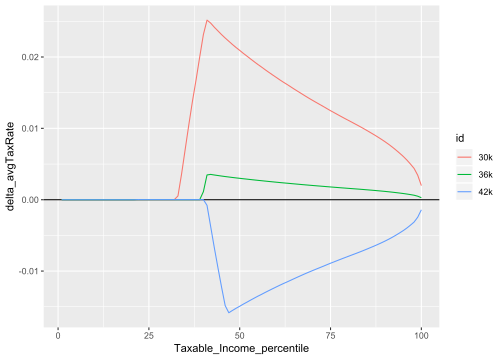

Important temporary notice (2019-02-09): The vignettes do not run on pandoc v2.4 (or take a very long time). Please upgrade to v2.6 (2019-01-30) if building vignettes. You may need to modify the PATH or change the RSTUDIO_PANDOC env. var after installing.
Australian Tax Policy Analysis
Overview
install.packages("grattan")library(grattan)
income_tax
Calculates the income tax for a given taxable income and financial year:
income_tax(50e3, "2015-16")With sample files
income_tax is designed to work well with the ATO’s sample files. You can obtain the sample files from my repo:
# install.packages("taxstats", repos = "https://hughparsonage.github.io/tax-drat")
library(taxstats)
library(hutils)
library(data.table)
library(magrittr)
library(ggplot2)Simply pass the sample file to .dots.ATO and the complexities of things like Medicare levy and the Seniors and Pensioners Tax Offset are handled for you. For example:
s1314 <- as.data.table(sample_file_1314)
s1314 %>%
.[, tax := income_tax(Taxable_Income, "2013-14", .dots.ATO = s1314)] %>%
.[, .(Taxable_Income, tax)]
model_income_tax: modelling changes to personal income tax
While income_tax is designed to inflexibly return the tax payable as legislated, model_income_tax is designed to calculate income tax when changes are made. For example,
s1314 %>%
# reduce top threshold from 180,000 to 150,000
model_income_tax(ordinary_tax_thresholds = c(0, 18200, 37000, 80000,
150e3),
baseline_fy = "2013-14") %>%
.[, .(Taxable_Income, baseline_tax, new_tax)]## Taxable_Income baseline_tax new_tax
## 1: 4800 0 0.000
## 2: 126122 36503 36503.970
## 3: 39742 4655 4655.410
## 4: 108123 29574 29574.355
## 5: 85957 21040 21040.445
## ---
## 258770: 24462 1111 1111.710
## 258771: 37055 3701 3701.525
## 258772: 45024 6530 6530.520
## 258773: 5134 0 0.000
## 258774: 46368 7007 7007.640
project
Given a sample file, we can project forward a number of years
s1617 <- project(s1314, h = 3L)or to a particular financial year
s1718 <- project_to(s1314, "2017-18")Together with model_income_tax, this allows us to make point-predictions of future years. The function revenue_foregone prettily prints the resultant revenue:
sample_file_1314 %>%
project_to("2018-19") %>%
model_income_tax(baseline_fy = "2017-18",
ordinary_tax_thresholds = c(0, 18200, 37000, 87000,
150e3)) %>%
revenue_foregone
compare_avg_tax_rates:
Create comparison of average tax rates:
lapply(list("30k" = 30e3,
"36k" = 36e3,
"42k" = 42e3),
function(T2) {
model_income_tax(s1718,
baseline_fy = "2017-18",
ordinary_tax_thresholds = c(0,
18200,
T2,
87000,
180e3))
}) %>%
rbindlist(idcol = "id",
use.names = TRUE,
fill = TRUE) %>%
compare_avg_tax_rates(baseDT = .[id %ein% "36k"]) %>%
ggplot(aes(x = Taxable_Income_percentile,
y = delta_avgTaxRate,
color = id,
group = id)) +
geom_hline(yintercept = 0) +
geom_line()
NEWS
1.7.1.0
Bug fixes
-
income_taxnow gives consistent results modulo the existence of completely empty columns that are inputs forsapto(#158)
Enhancements:
-
age_groupercan now have a custom first label prefix, and is much faster whenlength(age)is large. -
income_taxnow emits a warning when both age and.dots.ATOare provided, indicating thatagewill be ignored. - The data has been updated to 2019-02-09.
1.7.0.0
Bug fixes
- Fixed failing interaction between temporary budget repair levy and small business tax offset in 2016-17.
-
small_business_tax_offset()is now always positive, fixing the original misinterpretation of the legislation whereby negative business income resulted in a negative offset. -
*_inflatorfunctions now return correct results for non-standard but supported financial years. -
inflatorno longer fails whento_fyis length > 1 and unordered.
New features
-
mutate_ntileandmutate_weighted_ntilefor adding quantile columns - New welfare functions (usable for the 2015-16 financial year)
-
age_pension, carer_paymentcarers_allowanceenergy_supplementfamily_tax_benefitnewstart_allowancepension_supplement-
rent_assistancethe Commonwealth Rent Assistance -
model_rent_assistanceas experimental function for modelling changes to rent assistance. -
youth_allowance()now available, though limited
-
-
compare_avg_tax_rates: create a difference in average tax rates between multiple models and a baseline tax, by percentile. -
install_taxstats()as a convenient means to install the non-CRANtaxstatsdependency.
Enhancements
-
prohibit_vector_recycling()and friends return more informative error messages. - Added default values to the following functions:
-
income_tax,income_tax_sapto: the default value for fy.year is the current financial year -
cpi_inflator,lf_inflator_fy,wage_inflator: if both from_fy and to_fy are missing, the default values become the previous and current financial years respectively. If only one of the two are missing, an error appears.
-
-
income_taxis about twice as fast since 1.6.0.0: 1.5-2.0s down from 3.0-3.7s on the 100% population (13 million) -
inflatorandcpi_inflator,lf_inflator_fy, andwage_inflatorare now much faster when eitherfrom_fyorto_fyhave more than 100,000 elements:
set.seed(19952010)
from_fys <- sample(yr2fy(1995:2010), size = 1e6, replace = TRUE)
microbenchmark(cpi_inflator(from_fy = from_fys, to_fy = "2015-16"))
# Old
Unit: seconds
expr min lq mean median uq
cpi_inflator(from_fy = from_fys, to_fy = "2015-16") 1.519483 1.54438 1.550628 1.549735 1.554507
max neval
1.661502 100
# New
Unit: milliseconds
expr min lq mean median uq
cpi_inflator(from_fy = from_fys, to_fy = "2015-16") 40.71753 41.94061 47.93162 42.93946 48.08461
max neval
191.3497 100Potentially breaking changes
-
yr2fy(x)no longer works for x = 1900L, despite a unit test, for the sake of performance.
#> Last change: NAMESPACE at 2018-08-19 14:47:14 (4 mins ago).
#> Unit: milliseconds
#> expr min lq mean median uq max neval cld
#> yr2fy(z) 75 88 98 90 101 161 100 a
#> .yr2fy(z) 274 286 298 297 302 359 100 bUse yr2fy(x, assume1901_2100 = FALSE) if you need the old behaviour.
1.6.0.0
2018-05-08
- Never-legislated Medicare levy change in 2019-20 has been reverted
- Budget 2018:
-
model_income_tax()no longer coercesWEIGHTto integer. - New arguments to support Budget 2018:
-
lito_multiPermits multiple pieces to the linear offset. -
Budget2018_lamingtonThe Low And Middle Income Tax Offset proposed in the Budget 2018 budget. -
Budget2018_lito_202223The proposed change to LITO from 2022-23. -
Budget2018_watrThe offset proposed by the Opposition the Budget Reply. -
sbto_discountAllows modification of the small business tax offset. -
clear_tax_colsBy default, old tax columns are deleted. -
warn_upper_thresholdsIf changed toFALSEallows the automatic changes to be applied without warning.
-
-
- New functions:
-
progressivity()for Gini-based measure of the progressivity of income tax -
revenue_foregone()as a convenenience for returning the revenue foregone from a modelled sample file.
-
- Routine changes:
- ABS data updated as of 2018-05-21.
1.5.3.1
New features:
- New function
model_income_taxwhich attempts to provide every lever of the income tax system that is visible from the tax office’s sample files. Users can model the sample file by changing single parameters to observe the effect on tax collections. -
small_business_tax_offset: Include the small business tax offset as a standalone function and withinincome_tax.
Other user-visible changes
-
projectandproject_tono longer requirefy.year.of.sample.file. However, they expect the supplieddata.frameto be compatible with the sample file provided. Failling to provide a sample file with the expected number of rows or not providing a sample file with a valid number of rows is a warning, which can be silenced bycheck_fy_sample_file = FALSE.
1.5.2.5
2017-11-16
- Update wage data to 2017-Q3
- Update labour force data to 2017-09
- (internal) The
lf_trendinternal data table used to report the labour force in thousands of persons, as the ABS does. This seemed a bit strange, so nowobsValueuses integers (i.e. just the labour force). - Vignettes now install
taxstatsto a temporary directory if not already installed, rather than the user or system’s library.
1.5.1.2
2017-10-15
- Optional argument
ageinincome_taxnowNULLrather than42.
The default argument continues to result in SAPTO being not applied if.dots.ATO. However, if.dots.ATOis supplied (and the age variable has not been removed from it), the individuals’ SAPTO eligibility is determined by the age variable in.dots.ATO, rather than setting each individual’s SAPTO to 0.
CRAN Notes
Test results
0 ERRORS | 0 WARNINGS | 1-2 NOTEs
Test environments:
- Local Windows CRAN 3.5.1
- Travis-CI: Ubuntu 14.04. R 3.4, 3.5, and dev (r75443)
- Appveyor: dev (r75439) and release.
- winbuilder: dev (r75434) and release.
NOTES:
Possibly mis-spelled words in DESCRIPTION: … ==> Spellings are correct: ‘repos’ and ‘taxstats’ cannot be quoted as they are within R code.
URLs in angle brackets: ==> Not appropriate since the URL is within R code.
Suggests or Enhances not in mainstream repositories: … ==> Normal due to taxstats dependency